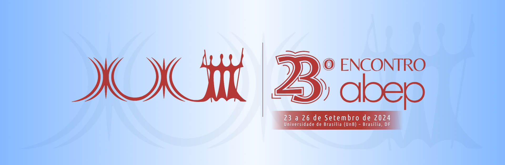

![]()
Este site apresenta o material de apoio para a oficina “{censobr}: Explorando o Censo Demográfico em R”. A oficina será realizada como parte da programação do 23o Encontro da ABEP, em Brasília, entre os dias 23 e 26 de setembro de 2024.

Resumo da oficina:
O Censo Demográfico é uma das mais importantes fontes de dados sobre as características e condições de vida da população brasileira. Nessa oficina, você vai aprender como baixar e manipular os dados das diversas edições do censo demográfico do Brasil de 1970 a 2022 usando o pacote {censobr} na linguagem de programação R.
A oficina também vai demonstrar como o {censobr} permite trabalhar com grandes bases de dados (larger-than-memory data) e ser integrado com o pacote {geobr} para visualização espacial de dados em diferentes escalas geográficas.
|
|
|
Aqui você encontra alguns slides explicando o que a gente cobre o que a gente não cobre com nesta oficina:
Esta oficina assume que o participante tenha pelo menos um conhecimento básico da linguagem de programação R. Se você quiser se familiarizar com o R, recomendamos os livros abaixo:
Sugestões de leitura:
Leitura adicional relevante, mas não essencial para a oficina.
- O site e documentação do pacote
{censobr}. - O site e documentação do pacote
{geobr}.
Sobre os instrutores:
Rafael H. M. Pereira
Coordenador de Ciência de Dados
Instituto de Pesquisa Econômica Aplicada (Ipea)
Website | Google Scholar | Twitter | Linkedin |
Rogério Barbosa
Professor de Sociologia
Instituto de Estudos Sociais e Políticos (IESP) da Universidade do Estado do Rio de Janeiro (UERJ)
Website | Google Scholar | Twitter | Linkedin |
Bio dos instrutors:
Rafael H. M. Pereira é pesquisador sênior nas áreas de planejamento urbano, ciência de dados espaciais e mobilidade urbana no Instituto de Pesquisa Econômica Aplicada (Ipea). Sua pesquisa investiga como as políticas urbanas e tecnologias moldam a organização espacial das cidades, a mobilidade humana, bem como seus impactos nas desigualdades sociais e de saúde. Algumas de suas contribuições nos campos de urban analytics e planejamento envolvem o desenvolvimento de novos métodos e ferramentas computacionais de código aberto para o estudo de sistemas urbanos e redes de transporte. Essas contribuições partem de interesses substantivos sobre questões de equidade no planejamento urbano, desigualdades de acesso a oportunidades, e dos impactos ambientais do ambiente construído e de padrões de mobilidade. Com graduação em sociologia pela UnB e mestrado em demografia pela Unicamp, Rafael Pereira obteve seu PhD em geografia pela Universidade de Oxford.
Rogério Barbosa é Professor de Sociologia do Instituto de Estudos Sociais e Políticos (IESP) da Universidade do Estado do Rio de Janeiro (UERJ), atuando nas áreas de Métodos Quantitativos e Estratificação Social. Formou-se bacharel em Ciências Sociais pela UFMG, mestre e doutor em Sociologia pela Universidade de São Paulo (2017). Realizou estágio pos-doutoral em Ciência Política pela USP e foi visiting scholar no Departamento de Sociologia da Columbia University. É pesquisador associado do Centro de Estudos da Metrópole (CEM-USP), affiliated scholar no Brazil Lad da Princeton University e membro da Rede de Pesquisa Solidária Políticas Públicas e Sociedade. Trabalhou como consultor metodológico de diversos grupos de pesquisa e também ministrou diversos cursos de programação e métodos estatísticos para instituições e universidades no Brasil. Atualmente pesquisa as tendências de longo prazo da desigualdade de renda no Brasil, usando levantamentos históricos e dados administrativos, bem como microdados contemporâneos. Desenvolve também pacotes R (código aberto) para pesquisa social e ferramentas para facilitar o acesso aos dados brasileiros para um público mais amplo.